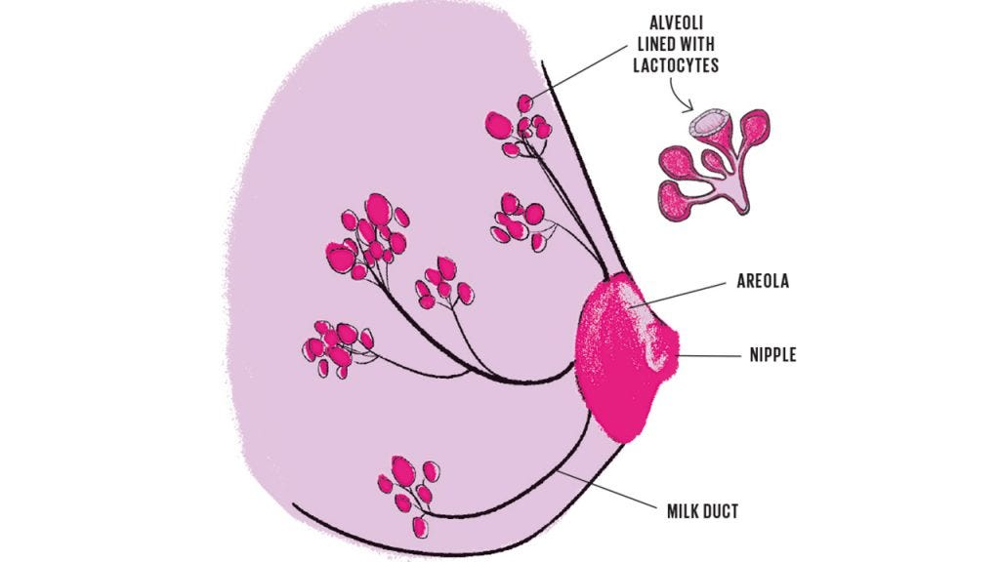
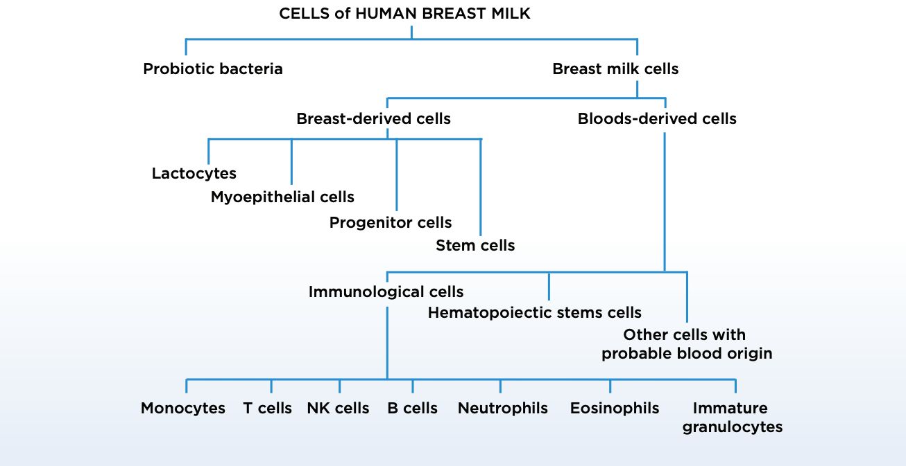
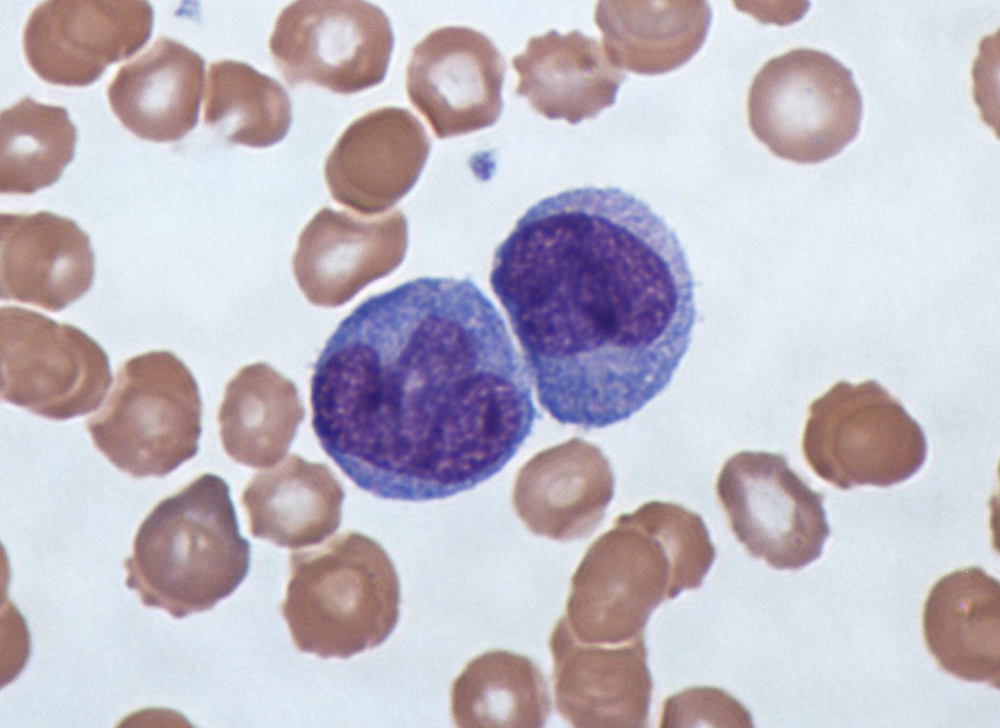
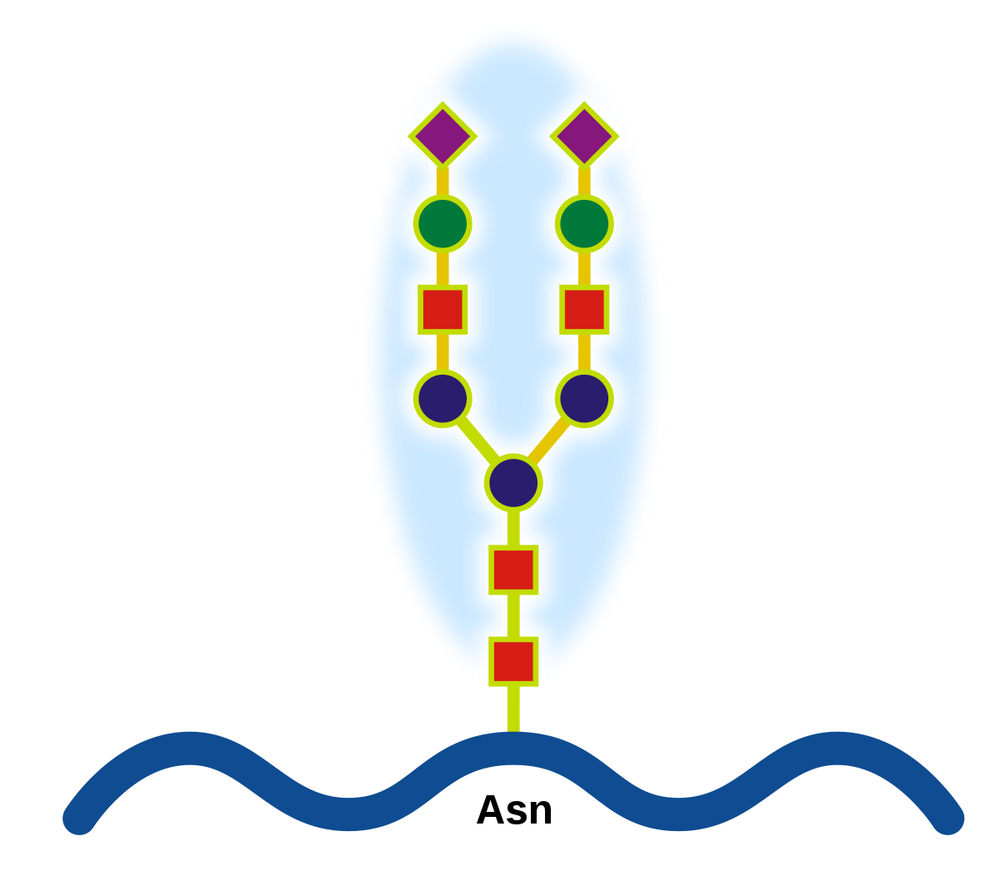
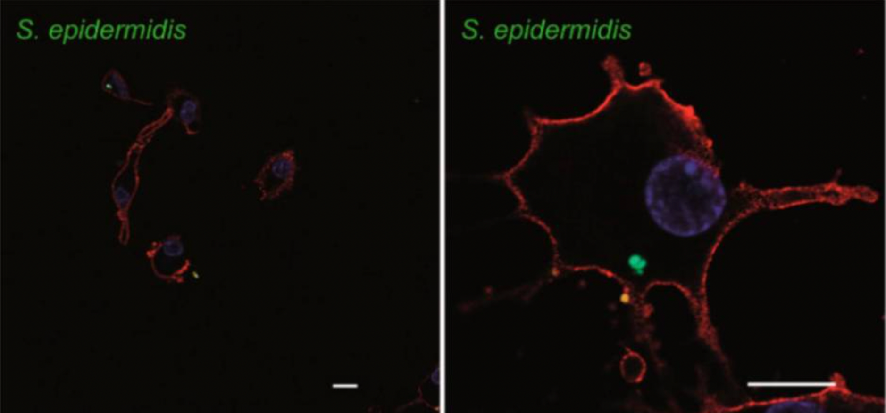

Breastfeeding is the single best way to prevent child-mortality.
If 95% of children were to be breastfed, we could prevent 823,000 child deaths (half of total annual child deaths) and 20,000 breast cancer deaths annually. No other single solution has the power to reduce child mortality to such a significant extent.Despite this, currently only about 30% of women exclusively breastfeed for the first 12 months of their child’s life. There were also more women breastfeeding in the 1960s than there are in 2021. That means that if the same number of children were breastfed as there were in the 60s, we could save about 200,000 children every year.
Why has the number of women breastfeeding decreased?
Up until the recent 10,000 years, there were two primary methods for feeding babies. Mothers either breastfed or they had a wet-nurse that would breastfeed their baby. It was thought that all breastmilk was the same, and since breastfeeding was low-class, wealthy families option for the second option.
Then, the agricultural revolution happened, and humans domesticated animals, so we started to use animal milk as an alternative to breastmilk for infants. However, animal milk does not have the right composition, with too much sodium and casein. Child mortality rates almost doubled, we learned, and now fewer children are fed with pure animal milk.
Then, in the 1970s, infant formula was marketed in a way that convinced people it had the same qualities, or in some cases, even better nutrients than breastmilk.
People started realizing this, so now more and more women are beginning to breastfeed, compared to the 1970s and 1980s. But we still haven’t reached the breastfeeding percentage that stood before the formula was introduced. Which is understandable, again, there are many many reasons women do not breastfeed.
How Lactation works
Pregnancy
Although the breast experiences significant change prior to pregnancy, when women undergo a pregnancy and lactation cycle (PLC), the breast is completely remodeled. This process is controlled by increased levels of the lactogenic complex of reproductive hormones: estrogen, progesterone, and prolactin, as well as metabolic hormones (growth hormone, glucocorticoids, parathyroid hormone-related protein, and insulin).
Mammary Glands
Mammary glands (medical term for the breast) are modified sweat glands (sweat glands are a type of organ). They primarily consist of lactiferous ducts (help transfer milk), which expand and branch out during pregnancy. Clusters of breast alveoli form from these ducts and expand toward the chest wall (ribs), since that is the contact point with the rest of the body.
Alveoli look like small balloons, lined with lactocytes, which are the cells that produce most of the breastmilk. Milk is secreted by the lactocytes, filled into the alveoli, then squeezed through the ducts into the milk ducts and into the nipple.
The breast undergoes 2 phases throughout the preparation for breastfeeding.
Secretory differentiation
In this stage, the hormones in a woman’s body induce the stem cells in the breast to differentiate into lactocytes, which then have the capacity to synthesize (generate) breast milk.
Up until delivery, a hormone called progesterone interferes with the prolactin hormone, which prevents the mammary glands from fully lactating. So in order for the mother to have the ability to breastfeed, a second step of hormonal processes needs to occur.
However, during this stage, the glands still have the capacity to produce small amounts of a pre-milk substance called colostrum. This substance lasts about 6 weeks after the child’s birth and is the most concentrated in antibodies and nutrients. When a child is born, they are exposed to so many new pathogens (although there are currently studies being done that suggest the fetus is exposed to bacteria in the placenta). Colostrum is the first substance that is fed to the child, which is why it is the most concentrated in immunogenic components.
Secretory Activation
When the child is born, progesterone hormone levels significantly decrease, which signals the mammary glands to start producing real breastmilk.
Components of breastmilk
Human milk contains over 2,500 different components, the concentration of which can change every hour. This makes human milk one of the most complex fluids on earth.
Previous research shows that the primary component is water (87%), and most of the other components are categorized into either lactose (7%), fats (4%), and proteins (1.0%). However, we are now understanding that breastmilk also contains complete cells, although it is underdetermined at what amounts.
All of the molecular components of breast milk are either synthesized by lactocytes (the breastmilk-producing cells I previously talked about in the breast) or imported into milk from the breast’s blood supply. However, breastfeeding is extremely understudied, which means that very little research has been done on how some of the nutrients actually get to the breastmilk.
I will mostly be writing about the immunogenic components of breastmilk since the absence of those is the biggest factor in child mortality. It is important to consider that although it is not the focus of this article, casein, fats, minerals, and vitamins are extremely important for the development of the child (especially the prefrontal cortex).
Immunogenic components
The transplacental (between mother and child) transfer of immunogenic functions is extremely important for a newborn. There are three primary ways immunity is transferred:
- Transfer of antibodies through the placenta
- Anti-infective resistance factors in the amniotic fluid (a fluid excreted by the infant that fills up the amniotic sac which coats the child in the womb).
- Through colostrum and milk (what I’m narrowing into in the rest of this article)
The primary chemical barrier that protects the intestine is contained in the mucus layers lining the gastrointestinal tract. These mucus layers minimize contact between pathogens that enter the bacteria and the epithelial cells inside the stomach.
There are multiple different types of immunogenic factors in breastmilk including: immunoglobulins (antibodies), lactoferrin, lysozymes, and cytokines. New research also shows that breast milk contains epithelial cells, stem cells, and is a continuous source of beneficial (probiotic) bacteria, including Lactobacillus and Bifidobacterium.
All of these factors add another layer of complex protection to the intestinal mucus layers.
Immunoglobulins (antibodies)
Immunoglobulins are the primary proteins protecting a human from infection. The primary immunoglobulin in breastmilk is Secretory Immunoglobulin A (sIgA), which makes up about 90% of all antibodies in breastmilk. SIgA lines the inside of the stomach and blocks pathogen contact with the intestinal epithelial layer by binding to and trapping them. SIgA ends up sitting in the stomach throughout the life of a human, protected from proteolysis by sugar components (galactose, fucose, and mannose) caused by the acids (the breakdown of proteins).
Immunoglobulins are transferred to the mammary glands through the entero-mammary link. This is a blood pathway linking the mother’s gut and the alveoli of the breast. This is extremely understudied, however, researchers hypothesize that when the woman’s hormone levels change, this signals different components to be sent to the breast. How and why these hormones change is what we have yet to understand.
Cells in breastmilk
Researchers first discovered the presence of cells in breastmilk about a decade ago when they found modified milk stem cells within the brain, thymus, pancreas, liver, spleen, and kidneys of an infant. Every month, new research is coming out about the cells contained in breast milk. Here is a diagram of the most up-to-date knowledge of these cells:
The cells originating in the breast include lactocytes (secretory cells), myoepithelial cells, progenitor cells, and mammary stem cells, and a small number of epithelial cells from the nipple and skin of the breast. Cells originating from the blood include immune cells (macrophages, neutrophils, and lymphocytes) and hematopoietic stem cells.
Leukocytes — white blood cells Animal studies have proved that white blood cells found in breast milk survive through the infant’s digestive tract, and then translocate into the blood, lymph nodes, spleen, and liver. In the diagram, everything under “immunological cells” is a type of white blood cell.
White blood cells are extremely essential to our bodies, by fighting pathogens directly via phagocytosis (killing pathogens), producing bioactive components (such as antibodies) modifying the microenvironment of the infant digestive tract. However, they only constitute < 2% of cells that travel to the breast through the bloodstream. So, that leaves the question about what all the other cells are.
Stem cells
A few studies suggested that human milk contains mesenchymal stem cells (MSCs), which are found in bone marrow and are important for making and repairing skeletal tissues, such as cartilage, bone, and the fat found in bone marrow. Researchers have also discovered that breast milk contains pluripotent stem cells, which have the ability to replicate into more stem cells, as well as differentiate into any cell in the body. For example, we have been able to differentiate pluripotent cells in vitro into adipose cells, chondrocytes, osteoblasts, neuronal cells, hepatocyte-like cells, and pancreatic beta cells, as well as lactocytes and myoepithelial cells. That’s a lot of words for these stem cells can literally turn into any cell in the body, and breastmilk provides a supply of them to the infant.
Macrophages
About 80% of the cells in early milk are breast milk macrophages, originating as peripheral blood monocytes, which look something like the image below.
These cells are constantly circulating in the bloodstream, and with the right hormone levels, will exit the bloodstream and migrate into milk through the mammary epithelium (cells that line the surface of the milk ducts in the breast). The presence of GM-CSF, which is a cytokine (signaling protein) causes these monocytes to differentiate into potent breast milk macrophages. The macrophages then have the ability to differentiate into dendritic cells that stimulate infant T-cell (immunological) activity.
Oligosaccharides
Glycoproteins are proteins that have oligosaccharide attached to them.
This is a protein, and the different shapes are different oligosaccharide attached to it.
Human milk glycoproteins (HMGPs) MUC1 and MUC4 bind to HIV, rotavirus, Escherichia coli, and Salmonella pathogens. There are other HMGPs that bind to H. influenzae, Streptococci, Helicobacter pylori, Reovirus, E. coli, and Burkholderia cepacia. The interactions between glycoprotein and ligands are being modeled using nanosurface plasmon resonance and glycan microarrays.
Lactoferrin
SIgA (the antibody I previously talked about) and lactoferrin correspond to 26% of the protein content of breast milk. So, these two components are extremely important, and therefore, are the ones I am studying.
What lactoferrin does is it regulates how well the iron is absorbed by the immune system. In particular, lactoferrin binds the iron in breast milk, which limits its availability to pathogens. In this way, it also starves the bacteria of nutrients, and just in case that wasn’t enough, will sometimes destroy the walls around bacteria.
Lactoferrin has many other abilities, for example it:
- Has a direct cytotoxic effect against bacteria, viruses, and fungi
- Blocks inflammatory cytokines (signal-sending proteins) such as IL-1β, IL-6, TNF-α, and IL-824–26.
- Interferes with viral attachment as well as the contact with the specific entry receptors, such as ACE2. Angiotensin-converting enzyme 2 (ACE2) is an enzyme that attaches to the membranes of cells located in the lungs, arteries, heart, kidney, and intestines. This creates an interference and can sometimes result in lowered blood pressure. Therefore, targeting ACE2 is a cool option for treating and preventing cardiovascular diseases.
There are several other glycoproteins, another one being Lactadherin, which can inactivate viruses and limit inflammation by increasing the effective phagocytosis (killing) of apoptotic (useless but not yet dead) cells. The list of bioactive glycoproteins in human milk is constantly expanding and their individual functions are being studied.
The gut microbiome
The gut microbiome is consistently being linked to literally every disease you could possibly imagine. Having a greater diversity of bacteria in the gut is directly linked to better mental and physical health.
For example, chronic cardiovascular diseases are the leading cause of mortality in the US, with heart disease and diabetes costing >$500 billion a year, and affecting around 60% of individuals over their lifetime. Pathogenesis (development of a disease) develops over decades, with many different contributing factors, such as environmental exposures, diet, and genetic background.
However, researchers have found that people with a more diverse microbiome are less likely to develop a cardiovascular disease. The diversity of the gut microbiota is primarily expanded in the first years of our lives, and dysbiosis (microbial imbalance) in infancy may affect the long-term health of the gut microbiota.
Breastmilk is the main contributor to a well-developed and diverse microbiome, due to an active presence of bacteria. It is estimated that an infant feeding on 800 ml of breast milk per day could ingest 107–108 bacterial cells daily!
To date, metagenomic analysis of human milk shows that it contains >360 different prokaryotic cells. The most frequent bacteria found in human milk are categorized into the species: Bifidobacterium, Staphylococcus, Acinetobacter, Streptococcus, Pseudomonas, Lactococcus, Enterococcus and Lactobacillus. In addition, several yeasts and fungi have been identified in breast milk of healthy mothers, including Malassezia, Candida, Saccharomyces and Rhodotorula.
For example, a low amount of gut Bifidobacterium can decrease the amount of energy produced from food, which leads to excessive early weight gain during the first months of life. Moreover, Lactobacillus gasseri and Lactobacillus fermentum reduce the growth of potential pathogenic organisms in the gastrointestinal tract. It does this by producing acetate and lactate (can kill several different pathogens) from the sugars ingested by the host.
The fact that human milk contains bacteria has been known for quite a while, so infant formula has been supplemented with several Bifidobacterium strains. This altered the microbiome composition in infants but did not affect long-term colonization, which isn’t too great because long-term health is what we’re striving for.
Retrograde flow
Researchers found that Streptococcus spp., which is one of the major bacteria in human milk is also widely present in the salivary microbiota. Moreover, Staphylococcus spp., Corynebacterium spp. and Propionibacterium spp., which are common skin bacteria are also frequently found in human breast milk. This suggests that with a retrograde flow process, some bacteria from the mouth and skin of the infant enter back into the mammary ducts.
Entero-mammary pathway
The entero-mammary pathway is what connects the mother’s gut to the mammary glands. Maternal intestinal bacteria migrate from the gut by inserting itself into internalization in dendritic cells, which looks something like this:
These cells then circulate to the mammary gland via the lymphatic and blood circulation.
Neurodevelopment
This is a quick summary of how the gut microbiota can influence neurodevelopment, just in case you’re curious:
There are several pathways connecting the brain and microbiota:
- The vagus nerve

The long yellow tube is the vagus nerve
- The hypothalamic-pituitary-adrenal (HPA) axis
- The immune system
- Neurotransmitters and metabolites with neuroactive properties produced by the microbiota in the intestines. Your gut has approximately the same number of neurons as the brain of a cat.
Moreover, breast milk-derived stem cells also have the capability to differentiate into neural cell lineages: neurons expressing ß-tubulin as a neuron marker, oligodendrocytes expressing the O4 marker, and astrocytes expressing the GFAP marker.
However, even given all of these benefits, of the estimated 140 million women who give birth every year, only about 40% of them breastfeed.
There are many different reasons for this:
- Breastfeeding takes about 10 hours a day
- A lot of people in society associate the breast as a purely sexual organ
- 50% of men surveyed in the United States said that it should be illegal to breastfeed in public. Some women, therefore, feel judged and uncomfortable to breastfeed in public
- Breastfeeding can be extremely painful
- Women don’t always have the financial and emotional support required to breastfeed
- Women are not always in the right sanitary conditions to breastfeed
Infant formula was created to help work around these issues, and although it is constantly improving, formula does not have bacteria, oligosaccharides, antibodies, and cells needed for a child's development.